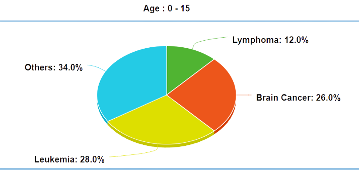
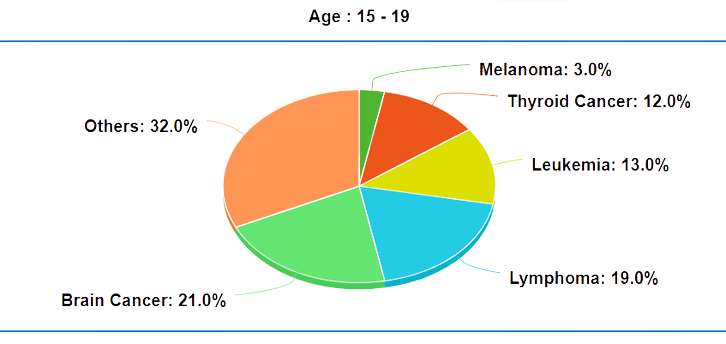

Common Types of Cancer
In 2023, an estimated 9,910 children younger than 15 and about 5,280 teens ages 15 to 19 in the India will be diagnosed with cancer. In children under 15, leukemia makes up 28% of all childhood cancers diagnosed. The next most common type of childhood cancer is brain cancer (26%), followed by lymphoma (12%). In teens ages 15 to 19, brain cancer (21%), lymphoma (19%), and leukemia (13%) are the most commonly diagnosed cancers. Some cancers that are often found in adults are also common in teens. For example, thyroid cancer makes up 12% of cancer cases in teens, while melanoma makes up 3% of cases in this age group.


In teens ages 15 to 19, brain cancer (21%), lymphoma (19%), and leukemia (13%) are the most commonly diagnosed cancers. Some cancers that are often found in adults are also common in teens. For example, thyroid cancer makes up 12% of cancer cases in teens, while melanoma makes up 3% of cases in this age group.
Blood Cancers
Leukemias
Childhood acute lymphoblastic leukemia (ALL) is a type of cancer in which the bone marrow makes too many immature lymphocytes (a type of white blood cell). Leukemia may affect red blood cells, white blood cells, and platelets.
Lymphoma
Lymphoma is a broad term for cancer that begins in cells of the lymph system. The two main types are Hodgkin lymphoma and Non-Hodgkin lymphoma (NHL). Hodgkin lymphoma can often be cured. The prognosis of NHL depends on the specific type.
Bone Cancers
Bone cancer is rare and includes several types. Some bone cancers, including osteosarcoma and Ewing sarcoma, are seen most often in children and young adults.
Brain Cancers
A childhood brain or spinal cord tumor is a disease in which abnormal cells form in the tissues of the brain or spinal cord. The brain controls many important body functions. The spinal cord connects the brain with nerves in most parts of the body. Brain and spinal cord tumors are a common type of childhood cancer. Some tumors are benign and some children can be cured by surgery.
Neuroblastoma
Neuroblastoma is a cancer of immature nerve cells that most often occurs in young children. It usually begins in the adrenal glands but can form in the neck, chest, abdomen, and spine.
Wilms' Tumor
Arises in the kidney most often appears in children, usually between the ages of two and four, and is very different from adult kidney cancers, cure rates are very high with early diagnosis.
Rhabdomyosarcoma
Rhabdomyosarcoma usually begins in muscles that are attached to bones and that help the body move, but it may begin in many places in the body. Rhabdomyosarcoma is the most common type of soft tissue sarcoma in children.
Retinoblastoma
Retinoblastoma is cancer of the retina. Retinoblastoma is a rare type of eye cancer that can affect young children, usually under the age of 5. If it's picked up early, retinoblastoma can often be successfully treated.
Screening for Cancer
Screening is testing for a disease such as cancer in people who don’t have any symptoms. Childhood cancers are rare, and there are no widely recommended screening tests to look for cancer in children who are not at increased risk.
Early detection through screening also means faster recovery, less money spent on treatment and better chance of your survival.
Information about Cancer Screening
Importance of Cancer Screening for Children
Some children have a higher chance of developing a specific type of cancer because of certain gene changes they inherit from a parent. These children may need careful, regular medical check-ups that include special tests to look for early signs of cancer.
Some children have a higher chance of developing a specific type of cancer because of certain gene changes they inherit from a parent. These children may need careful, regular medical check-ups that include special tests to look for early signs of cancer.
Some Limitations
Though cancer screening is good to detect cancer in early stages, which can help ypu recover quicker and spend less on the treatments. But it also comes with some limitations which are as follows:
False Positive:Sometimes test results suggest you have cancer even though you don't. A false positive can make you anxious and stressed because you think you have cancer when you don't. It may lead to further testing that is invasive and unnecessary to rule out cancer
False Negative: The test may not detect cancer even though it is present. A false negative may mistakenly reassure you and let you think you don't have cancer when you do. This may lead you to ignore symptoms that indicate the presence of cancer, causing a delay in diagnosis and treatment.
Over Diagnosis: Some cancers would not necessarily lead to death or decreased quality of life. Overdiagnosis is when a test finds cancer that would not necessarily lead to death or decreased quality of life. Some cancers are slow growing or may never cause problems or need treatment. Finding these types of cancer can lead to unnecessary treatments that have side effects.
Types of Screening Available
Blood Tests
Routine blood tests measure the number of different types of cells in a person’s blood. Levels of certain cells that are too high or too low can indicate the presence of certain types of cancer.
Biopsy
A biopsy is the removal of a small amount of tissue for examination under a microscope.Other tests can suggest that cancer is present, but only a biopsy can make a definite diagnosis, except for certain types of brain tumors.
Bone marrow aspiration and biopsy
These 2 procedures are similar and often done at the same time to examine the bone marrow, which is the spongy, fatty tissue found inside larger bones. Bone marrow has both a solid and a liquid part. A bone marrow aspiration removes a sample of the fluid with a needle. A bone marrow biopsy is the removal of a small amount of solid tissue using a needle. A pathologist then studies the samples in a lab. A common site for a bone marrow aspiration and biopsy is the pelvic bone, which is located by the hip.
Lumbar puncture (spinal tap)
A lumbar puncture is a procedure in which a needle is used to take a sample of cerebral spinal fluid (CSF) to look for cancer cells or tumor markers. Tumor markers are substances found in higher than normal amounts in the blood, urine, or body tissues of people with certain kinds of cancer. CSF is the fluid that flows around the brain and the spinal cord.
Ultrasound
An Ultrasound uses sound waves to create a picture of the internal organs. Patients are usually awake during an ultrasound.
Computed tomography (CT or CAT) scan
A CT scan takes pictures of the inside of the body using x-rays taken from different angles. A computer then combines these pictures into a detailed, 3-dimensional image that shows any abnormalities or tumors. A CT scan can also be used to measure the tumor’s size.
Magnetic resonance imaging (MRI)
An MRI uses magnetic fields, not x-rays, to produce detailed images of the body. MRI can also be used to measure the tumor’s size.
Positron emission tomography (PET) or PET-CT scan
A PET scan is usually combined with a CT scan (see above), called a PET-CT scan. However, you may hear your doctor refer to this procedure just as a PET scan. A PET scan is a way to create pictures of organs and tissues inside the body. A small amount of a radioactive sugar substance is injected into the patient’s body. This sugar substance is taken up by cells that use the most energy. Because cancer tends to use energy actively, it absorbs more of the radioactive substance. However, the amount of radiation in the substance is too low to be harmful to patients. A scanner then detects this substance to produce images of the inside of the body.
Scans or radioisotope studies
In these procedures, a material with a small amount of radioactive substance (called a tracer) is injected into the body and then followed with a special camera or x-ray to see where the material goes. These studies can find abnormalities in the liver, brain, bones, kidneys, and other organs.